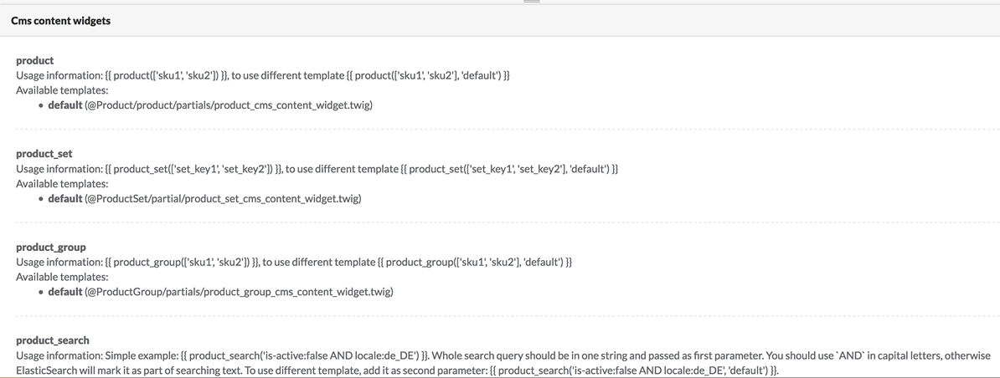
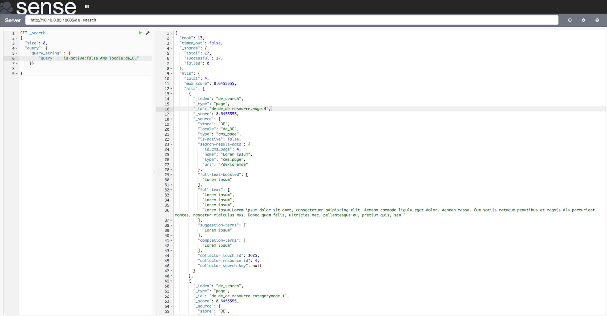

Available Widgets
Currently there are four widgets provided by default in Spryker shop: Product (abstract), Product Set, Product Group and Product Search.
They can be found in Administration Interface under Content Management->Page-> Edit Placeholders-> Content tab. The rules for widget creation are provided in Cms content widget area: for example to create a widget which would list products on a CMS page, you should use the following template: {{ product(['sku1', 'sku2'], 'default') }}, where product is the function name and '093', '066', '035', '083', '021','055' are its parameters (SKUs), and default is an optional parameter to be used to indicate a different (not default) twig template.

The shop owner can also add a widget that provides a list of products based on specific filter rules, whereas the product selection is dynamic, i.e. the SKUs are not hard coded as the Elasticsearch query string is created. This can be done with Product Search widget. See below for more details about it.
In the list below you can find the available widgets, their respective modules as well as the parameters that can be specified when creating the widgets.
-
Product (abstract)
Module: CmsContentWidgetProductConnector.
Usage template:
{{ product(['sku1', 'sku2']) }}, wheresku- SKU of an abstract product.You can use custom template like
{{ product(['sku1', 'sku2'], 'custom-template') }} -
Product Group
Module: CmsContentWidgetProductGroupConnector
Usage template
{{ product_group(['sku1', 'sku2']) }}, wheresku- SKU of an abstract product.You can use custom template like
{{ product_set(['sku1', 'sku2'], 'custom-template') }} -
Product Set
Module: CmsContentWidgetProductSetConnector.
Usage template:
{{ product_set(['set_key1', 'set_key2']) }}, whereset_key1- key of a product set.You can use custom template like
{{ product_set(['set_key1', 'set_key2'], 'custom-template') }} -
Product Search
Module: CmsContentWidgetProductSearchConnector.
For this widget, an Elasticsearch query should be created. Fields for querying could be for example as follows:
"store": "DE", "locale": "de_DE", "type": "product_abstract", "is_featured": false, "is-active": trueAll other fields are custom. Check Search 4.0 for information about project custom fields.
For example, the query in ZED can be like this: {{ product_search('is-active:false AND locale:de_DE') }}, where 'is-active:false AND locale:de_DE' is the search string for Elasticsearch.
The query operators are case-sensitive, so AND, OR should be upper-case.
The Elasticsearch query results can be pre-checked in Sense. See here for instructions on how to install it. Make sure you put de_search index in the server filed: http://VM_IP:10005/de_search. Write your query in the left panel of Sense:
GET _search { "size": 8, "query": { "query_string" : { "query" : "_your query here_" } } }So for our example the query would look like this
GET _search { "size": 8, "query": { "query_string" : { "query" : "is-active:false AND locale:de_DE" } } }Here is the example of query and results in Sense:

You can also use a custom template like
{{ product_search('is-active:false AND locale:de_DE', 'custom-template') }}Note, that when using the Product Search widget, no more than 8 results are returned. This value is hard coded.
See also:
Last review date: Jan. 30th, 2018